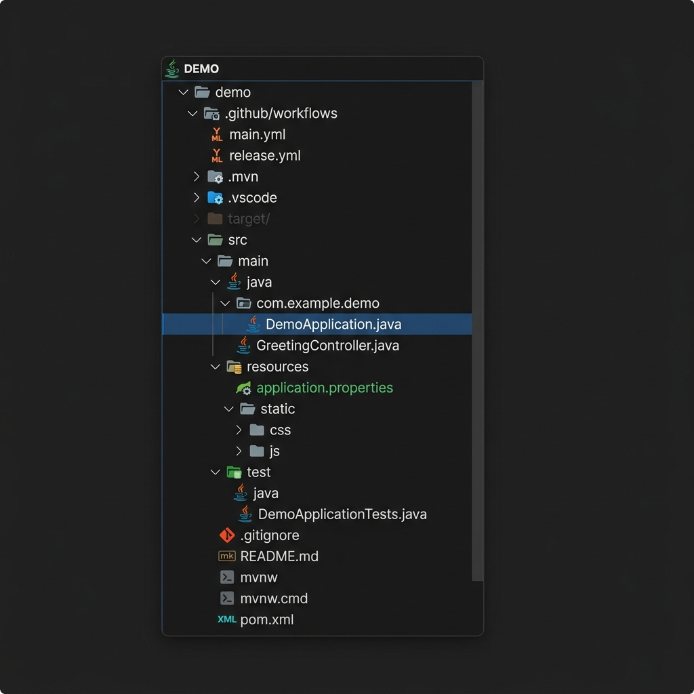
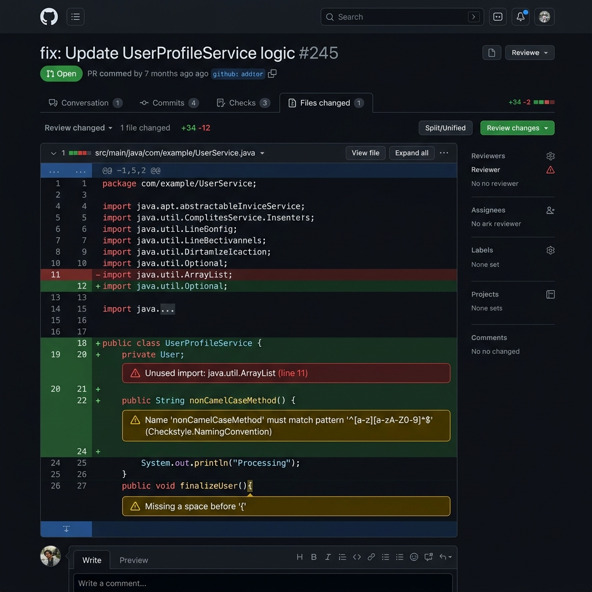

Hola mundo en Spring Boot
A continuación se muestra un ejemplo de integración y despliegue continuos en GitHub Actions de un proyecto Spring Boot. Los pasos a realizar son similares a los ejemplos anteriores, pero adaptaremos las órdenes o comandos a la forma de trabajar de Java con Maven y GitHub Actions.
Creación del repositorio
Para empezar a trabajar solo necesitas un repositorio alojado en GitHub de tipo público.
|
Las GitHub Actions funcionan tanto con repositorios públicos como privados. Sin embargo, otras funciones como las GitHub Pages solo funcionan con los repositorios públicos. |
En este repositorio subiremos el contenido de un proyecto HelloWorld en Spring Boot generado mediante el creador oficial de proyectos Spring Initializr.
-
Generamos el proyecto con Spring Boot 3.x, Java 21 y Maven.
-
Descomprimimos el archivo en un directorio.
-
Entramos al directorio y hacemos
git init. -
Creamos la rama principal
git checkout -b main. -
Hacemos commit de todos los archivos con
git add -A && git commit. -
Añadimos el remote de nuestro repositorio
git remote add origin <dirección-repositorio>. -
Subimos la rama local
git push origin main.
Nuestro repositorio tiene que tener la estructura estándar de un proyecto Maven:
|
Comprueba que el archivo  Figure 1. Archivos y carpetas en el estado inicial
|
Creación del workflow en GitHub Actions
Creamos un nuevo workflow .github/workflows/build.yml.
name: CI
on:
push:
branches: [ main ] (1)
pull_request:
branches: [ main ]
workflow_dispatch:
jobs:
build:
runs-on: ubuntu-latest
permissions:
contents: read
checks: write
pull-requests: write (2)
steps:
- uses: actions/checkout@v4
- name: Set up JDK 21
uses: actions/setup-java@v4
with:
java-version: '21'
distribution: 'temurin'
cache: maven (3)
- name: Build and Test with Maven
run: ./mvnw clean verify (4)| 1 | El nombre de la rama main o master depende de cuál es la rama principal. |
| 2 | Estos permisos son obligatorios para que los reporters anoten los resultados en el código. |
| 3 | El uso de cache: maven acelera significativamente las ejecuciones posteriores. |
| 4 | Compila, ejecuta tests y genera el paquete JAR. |
Sin embargo, nos interesaría ver los resultados de los tests de una forma más visual e integrada en el entorno de GitHub utilizando el action Test Reporter.
Editamos .github/workflows/build.yml y añadimos la acción para subir un artefacto con los resultados de los tests (en formato JUnit XML producido por Maven Surefire).
...
- name: Upload Test Results
uses: actions/upload-artifact@v4
if: success() || failure() (1)
with:
name: test-results
path: target/surefire-reports/*.xml (2)| 1 | Ejecutamos el paso independientemente de si los tests fallan. |
| 2 | Ruta donde Maven guarda los reportes JUnit. |
Además añadimos otro flujo que anote la pull request llamado .github/workflows/tests.yml.
name: 'Test Report'
on:
workflow_run:
workflows: ['CI']
types:
- completed
jobs:
report:
runs-on: ubuntu-latest
permissions:
checks: write
pull-requests: write
contents: read
steps:
- uses: dorny/test-reporter@v1
with:
artifact: test-results
name: JUnit Tests
path: '*.xml'
reporter: java-junitInforme de cobertura
Para obtener la cobertura de código en Spring Boot (usualmente con JaCoCo) y publicarla en GitHub Actions:
-
Asegúrate de que el plugin
jacoco-maven-pluginesté configurado en tupom.xml. -
Utiliza un action como JaCoCo Report para publicar los resultados.
Modifica .github/workflows/build.yml añadiendo el paso de reporte de cobertura:
...
- name: Add coverage to PR
id: jacoco
uses: madrapps/jacoco-report@v1.7.1
if: github.event_name == 'pull_request'
with:
paths: ${{ github.workspace }}/target/site/jacoco/jacoco.xml
token: ${{ secrets.GITHUB_TOKEN }}
min-coverage-overall: 80
min-coverage-changed-files: 80
...Análisis estático de código
Para Java, una de las herramientas más comunes de análisis estático es Checkstyle. Podemos integrarlo fácilmente para que anote las pull requests.
Añade el plugin de Checkstyle a tu pom.xml y configura el siguiente paso en .github/workflows/build.yml:
...
- name: Run Checkstyle
uses: dbelyaev/action-checkstyle@v1
with:
github_token: ${{ secrets.GITHUB_TOKEN }}
checkstyle_config: google_checks.xml (1)
reporter: github-pr-review
...| 1 | Puedes usar configuraciones estándar como google_checks.xml o una propia. |

Despliegue en la VM
Para desplegar el archivo JAR de Spring Boot en la instancia de despliegue, utilizaremos SSH de forma similar al ejemplo de Node.js.
Añadir secretos
Configura los secretos SSH_PRIVATE_KEY y SSH_HOST en tu repositorio como se explicó en la sección de Node.js.
Flujo de trabajo de despliegue
Creamos .github/workflows/deploy.yml:
name: Deploy
on:
push:
branches: [ main ]
workflow_dispatch:
jobs:
deploy:
runs-on: ubuntu-latest
steps:
- uses: actions/checkout@v4
- name: Set up JDK 21
uses: actions/setup-java@v4
with:
java-version: '21'
distribution: 'temurin'
- name: Build with Maven
run: ./mvnw clean package -DskipTests
- name: Install SSH Key
uses: shimataro/ssh-key-action@v2
with:
key: ${{ secrets.SSH_PRIVATE_KEY }}
known_hosts: 'placeholder'
- name: Adding Known Hosts
run: ssh-keyscan -H ${{ secrets.SSH_HOST }} >> ~/.ssh/known_hosts
- name: Deploy and Start Application
run: |
scp target/*.jar ubuntu@${{ secrets.SSH_HOST }}:~/app.jar
ssh ubuntu@${{ secrets.SSH_HOST }} "fuser -k 8080/tcp || true" (1)
ssh ubuntu@${{ secrets.SSH_HOST }} "nohup java -jar ~/app.jar > log.txt 2>&1 &" (2)| 1 | Detiene cualquier proceso que esté escuchando en el puerto 8080. |
| 2 | Ejecuta la aplicación en segundo plano. |
|
Por defecto, Spring Boot escucha en el puerto 8080. Asegúrate de que dicho puerto esté abierto en el cortafuegos de tu proveedor de nube. |
|
EJERCICIOS
|